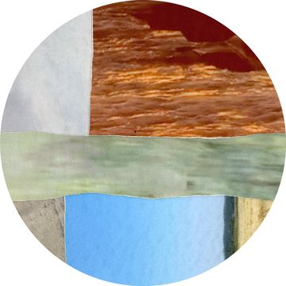

A
Plaque du BST-1
6 trous fraisés pour le mur, alignés sur les montants à 4 po de chaque extrémité. 4 avant-trous pour le BST-1, tracés directement d'après l'appareil centré sur la plaque (environ un carré de 4 po).

Un mur d'exposition qui sonne. Trois transducteurs font vibrer le gypse côté technique, pendant qu'une projection circulaire occupe la face publique.
Distances, réglages et points à surveiller pour le projecteur : voir l'onglet Projection.
Gauche et droite sont toujours nommées du point de vue du public. Le canal gauche de l'ampli va donc à l'exciteur qui se trouve à droite quand on travaille derrière le mur.
Le projecteur est suspendu au centre de la salle, face au mur. Tout se règle à partir de deux chiffres : la lentille à 228 po de la face publique, et à 96 po du sol.
Le haut du faisceau est horizontal parce que la lentille est à la hauteur du haut du mur. Le bas du faisceau descend en diagonale jusqu'au pied du mur : plus on s'approche du mur, plus il passe bas.
Le cercle remplit toute la hauteur de l'image. Les deux bandes de 13,5 po qui dépassent le mur sont noires dans Palinopsia, mais un noir de projecteur laser n'est jamais complètement éteint.
Ces éléments arrivent avec l'œuvre : ils ne sont pas à acheter.
| Élément | Qté | Rôle | Emplacement | Notes |
|---|---|---|---|---|
| Mac Mini M2 (2023) | 1 | Fait jouer Palinopsia (image) et le son. | Sur la tablette C, derrière le mur. | Sortie casque 3,5 mm vers l'ampli, HDMI vers le convertisseur HDMI → SDI. Alimentation intégrée : un seul cordon secteur. |
| Amplificateur 3 canaux 30 W | 1 | Alimente les trois transducteurs. | Sur la tablette C, à côté du Mac. | Avec son bloc 15 V 4 A, fixé sous la tablette. Gauche → exciteur gauche (public), droite → exciteur droit, basse → BST-1. |
| Projecteur LG BU50NST | 1 | Projection circulaire Ø 96 po. | Suspendu au centre de la salle, lentille à 228 po du mur et à 96 po du sol. | Détails dans l'onglet Projection. |
| Yosoo Health Gear Resonance Speaker 2 po, 25 W | 2 | Son stéréo : font vibrer le gypse comme une membrane. | Au milieu des travées, à 54 et 60 po du sol, sur les rondelles B. | Collés au VHB, avec cordelette de sécurité. |
| Dayton Audio BST-1 (bass shaker) | 1 | Basses : fait vibrer toute la structure du mur. | Sur la plaque A, à 28 po du sol. | 4 Ω, 50 W. Vissé directement, sans caoutchouc. |
| Barre d'alimentation | 1 | Alimente le Mac, l'ampli et le convertisseur HDMI → SDI. | Vissée sur le dosseret F, sous la tablette. | Branchée à la prise au sol du mur de rangement, environ 5 pi derrière. |
| Convertisseur Blackmagic HDMI → SDI | 1 | Envoie l'image du Mac sur la ligne SDI. | Sur la tablette C, à côté du Mac. | Relié au Mac par un câble HDMI de 2 pi. Alimenté par la barre d'alimentation. |
| Convertisseur Blackmagic SDI → HDMI | 1 | Ramène le signal en HDMI pour le projecteur. | Attaché au kit d'accrochage du projecteur. | Relié au projecteur par un câble HDMI de 2 pi. Alimenté sur la rallonge du projecteur. |
| Câbles HDMI 2 pi | 2 | Mac → convertisseur, convertisseur → projecteur. | Aux deux bouts de la ligne SDI. | |
| Câbles SDI 15 m | 3 | Ligne vidéo de 45 m entre les deux convertisseurs. | Du mur au projecteur, par le plafond. | Surplus enroulé derrière le mur. |
| Coupleurs SDI femelle-femelle | 2 | Relient les trois câbles SDI. | Sur la ligne SDI. | À fixer pour qu'ils ne tirent pas sur les connecteurs. |
Tout se coupe dans du contreplaqué 3/4 po ordinaire, sans sablage. Les lettres correspondent à la vue 3D.
Chaque pièce porte une lettre : l'écrire au crayon sur la pièce dès la coupe. Dessins à la même échelle, cotes en pouces. trou fraisé pour vis au mur avant-trou ou vis d'assemblage position d'une autre pièce
6 trous fraisés pour le mur, alignés sur les montants à 4 po de chaque extrémité. 4 avant-trous pour le BST-1, tracés directement d'après l'appareil centré sur la plaque (environ un carré de 4 po).
1 trou Ø 1/8 po près du bord pour la cordelette de sécurité. Coller le VHB sur la face la plus lisse.
4 trous fraisés au-dessus des goussets, 2 au-dessus du dosseret, et 1 trou Ø 1-1/2 po pour le passe-câble, à 2 po du bord arrière.
Un carré de 6 × 6 po coupé en diagonale. Le côté vertical se visse au dosseret F, le côté du dessus porte la tablette C.
Collé et cloué sur l'avant de la tablette, pour que le Mac ne glisse pas avec les vibrations.
4 trous fraisés pour le mur, à 2 po de chaque extrémité. 4 vis d'assemblage dans la tranche des goussets, posées par l'arrière avant le montage.
Cochez au fur et à mesure. Les cases restent cochées dans votre navigateur seulement.